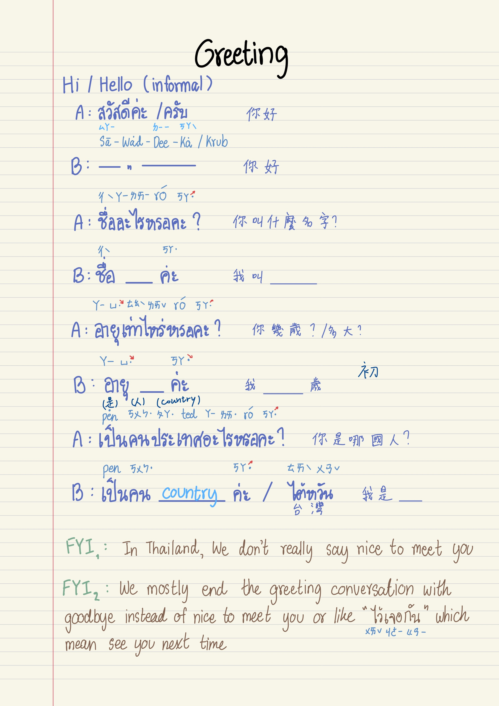
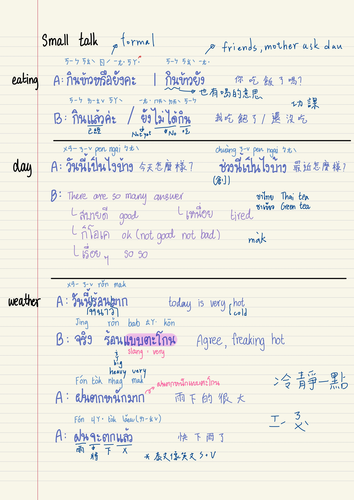
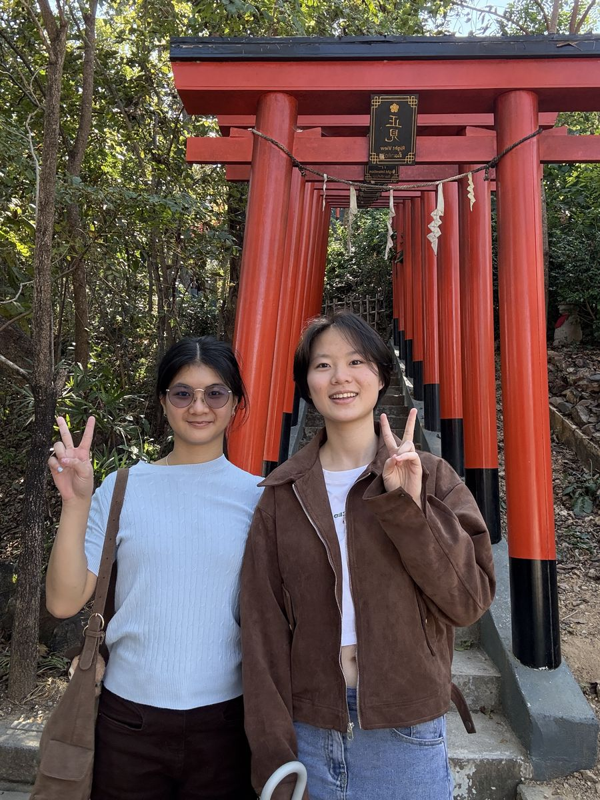

Made by Chacha · 本人親自整理，無業配



學泰文必備！從「聽不懂」「請說慢一點」到「我忘記了」,6 集完整收錄,點擊即可聽發音(男女雙聲可切換)
| ผม/ฉันมาจากไต้หวัน | phǒm/chǎn maa jàak taiwan | 朋／纏 媽假 戴丸 | 我來自台灣 I'm from Taiwan |
| คนไต้หวัน | khun taiwan | 坤戴丸 | 台灣人 Taiwanese |
| 泰文 Thai | 拼音 Pinyin | 唸法 Pron. | 中文 / English |
|---|---|---|---|
| สวัสดี | sà-wàt-dee | 沙瓦滴 | 你好／嗨／哈囉 Hello / Hi |
| ขอบคุณ | kòp kun | 口坤卡 | 謝謝 Thank you |
| ใช่ | châi | 菜 | 是的 Yes |
| ไม่ใช่ | mâi châi | 賣菜 | 不是 No |
| ขอโทษ | kŏr tôht | ㄎㄡˊ透 | 對不起 Sorry |
| ไม่เป็นไร | mâi bpen rai | 賣扁來 | 不客氣／沒關係／沒事 No worries / It's okay |
| ได้ | dâai | 戴 | 可以／好的 Okay / Can do |
| อรุณสวัสดิ์ | à-run sà-wàt | 阿潤沙瓦 | 早安（正式） Good morning (formal) |
| มอร์นิ่ง | mo-ning | 摸佞卡 | 早安（英譯）泰式發音 Good morning (Thai-accented) |
| สวัสดีตอนเช้า | sà-wàt-dee dton-cháo | 沙瓦滴抖潮 | 早安（口語） Good morning (informal) |
| ฝันดี | făn dee | 煩低 | 晚安／祝你好夢 Sweet dreams / Good night |
| กู๊ดไนท์ | goo-nigh | 姑奶 | 晚安（英譯）泰式發音 Good night (Thai-accented) |
| 泰文 Thai | 拼音 Pinyin | 唸法 Pron. | 中文 / English |
|---|---|---|---|
| 📍 提問 | |||
| สบายดีไหม | sà-baai dee măi | 撒掰滴埋 | 你好嗎？ How are you? |
| เป็นยังไงบ้าง | bpen yang ngai bâang | 邊飲矮棒 | 最近怎麼樣？ How have you been? |
| วันนี้ | wan née | 晚尼 | 今天 Today |
| เมื่อวานนี้／พรุ่งนี้ | mêuua waan née / prûng-née | ㄇㄜ晚尼／ㄆㄨㄣˋ尼 | 昨天／明天 Yesterday / Tomorrow |
| คุณชื่ออะไร | kun chêu à-rai | 坤撤阿來 | 你叫什麼名字？ What's your name? |
| คุณมาจากประเทศอะไร | kun maa jàak bprà-têt à-rai | 坤媽假 不拉貼 阿來 | 你來自哪個國家？ Where are you from? |
| ทำไมมาประเทศไทย | tam-mai maa bprà-têt tai | 湯麥媽不拉貼泰 | 為什麼來泰國呢？ Why did you come to Thailand? |
| ยินดีที่ได้รู้จัก | yin dee têe dâai róo jàk | 飲低踢帶如假 | 很高興認識你 Nice to meet you |
| โชคดี | chôhk dee | 湊低 | 祝你好運 Good luck |
| ขอให้มีความสุข | kŏr hâi mee kwaam sùk | 摳嗨米匡素 | 祝你開心 Wish you happy |
| เจอกัน | jer gan | 遮乾 | 下次見／之後見 See you |
| 💬 回答 | |||
| สบายดี ขอบคุณ | sà-baai dee kòp kun | 撒掰滴口坤卡 | 我很好，謝謝 I'm fine, thank you |
| ผม/ฉันชื่อ… | phǒm/chǎn chêu… | 纏撤… | 我叫作＿＿（名字） My name is… |
| ผม/ฉันมาจาก… | phǒm/chǎn maa jàak… | 纏媽假… | 我來自＿＿（國家） I'm from… |
| ผม/ฉันมาไทยเพราะ… | phǒm/chǎn maa tai prór… | 纏媽泰婆… | 我來泰國是因為＿＿ I came to Thailand because… |
| มาทำงาน | maa tam ngaan | 馬湯安 | 來工作 For work |
| มาเรียน | maa riian | 馬ㄌㄧㄢ | 來唸書／讀書 For studying |
| มาเที่ยว | maa tîieow | 馬踢奧 | 來旅遊 For traveling |
| เช่นกัน | chên gan | 秤甘 | 你也是 You too |
| 泰文 Thai | 拼音 Pinyin | 唸法 Pron. | 中文 / English |
|---|---|---|---|
| อร่อย | à-ròi | 阿ㄌㄨㄞˇ | 好吃 Delicious / Tasty |
| เอาอันนี้ | ao an née | 凹安尼 | 我要這個 I'd like this one |
| ราคาเท่าไหร่ | raa-kaa tâo rài | (拉咖)套來 | （價格）多少錢？ How much? |
| กินที่นี่ | gin têe nêe | ㄍㄧㄣ踢膩 | 內用（這裡吃） Dine in / For here |
| เอากลับบ้าน | ao glàp bâan | 凹ㄍㄚˇ伴 | 外帶 Takeaway / To go |
| ขอเมนูหน่อย | kŏr may-noo nòi | ㄎㄡˊmenuㄋㄡ一 | 請給我菜單 Menu, please |
| เช็คบิล | chék bin | 切克賓 | 我要結帳 Check, please |
| ไม่ใส่ถุง | mâi sài tŭng | 賣賽圖恩 | 不要袋子 No bag |
| ไม่ใส่ผักชี | mâi sài pàk-chee | 賣ㄙㄞˇㄆㄚ˙七 | 不要香菜 No coriander |
| แพง | paeng | pen（一聲） | 貴 Expensive |
| ถูก | tòok | 土 | 便宜 Cheap |
| 泰文 Thai | 拼音 Pinyin | 唸法 Pron. | 中文 / English |
|---|---|---|---|
| 🌶️ 辣度（Spiciness） | |||
| ไม่เผ็ด | mâi pèt | 賣ㄆㄟ˙ | 不要辣 Not spicy |
| เผ็ดนิดหน่อย | pèt nít nòi | ㄆㄟ˙膩noy | 微辣 A little spicy |
| เผ็ดกลาง | pèt glaang | ㄆㄟ˙剛 | 中辣 Medium spicy |
| เผ็ดมาก | pèt mâak | ㄆㄟ˙罵 | 大辣（非常辣） Very spicy |
| 🍯 甜度（Sweetness） | |||
| ไม่เอาน้ำตาล | mâi ao nám dtaan | 賣凹南單 | 不要加糖 No sugar |
| ปกติ | bpòk-gà-dtì | ㄅㄡˇㄍㄚˇ底 | 正常甜度 Normal sweetness |
| ไม่หวาน | mâi wăan | 賣碗 | 無糖 No sweet |
| หวานน้อย | wăan nói | 碗noy | 少糖 Less sweet |
| ครึ่งหวาน | krêung wăan | 克愣晚 | 半糖 Half sweet |
| หวานมาก | wăan mâak | 晚罵 | 很甜 Very sweet |
| 🧊 冰塊（Ice Level） | |||
| น้ำแข็งเยอะ | náam kăeng yúh | 難kenˊ yer | 冰塊多 More ice |
| น้ำแข็งน้อย | náam kăeng nói | 難kenˊ noy | 冰塊少 Less ice |
| ไม่ใส่น้ำแข็ง | mâi sài náam kăeng | 麥ㄙㄞˇ難kenˊ | 不加冰 No ice |
| 泰文 Thai | 拼音 Pinyin | 唸法 Pron. | 中文 / English |
|---|---|---|---|
| น้ำ | náam | 難（嘴閉） | 水 Water |
| ข้าว | khâao | 靠 | 飯／米 Rice |
| ข้าวเหนียว | khâao níao | 靠ㄋㄧㄠˊ | 糯米飯 Sticky rice |
| ก๋วยเตี๋ยว | gùay-dtīao | 歸ㄉㄧㄠˊ | 粿條／河粉 Noodles |
| ขนมปัง | khà-nǒm-pang | 卡農邦 | 麵包 Bread |
| นม | nom | ㄋㄨㄥ（嘴閉） | 牛奶 Milk |
| ไข่ | khài | 凱 | 蛋 Egg |
| เนื้อ | núea | ㄋㄜˊ啊 | 牛肉 Beef |
| หมู | múu | ㄇㄨˊ | 豬肉 Pork |
| ไก่ | gài | 改 | 雞肉 Chicken |
| ปลา | bplaa | ㄅㄨ拉 | 魚 Fish |
| ผัก | phàk | ㄆㄚˇ | 蔬菜 Vegetables |
| ผลไม้ | phǒn-lá-máai | 捧喇埋 | 水果 Fruits |
| น้ำผลไม้ | náam-phǒn-lá-máai | 難捧喇埋 | 果汁 Fruit juice |
| น้ำแข็ง | náam-khěng | 難ㄎㄟˊ嗯 | 冰塊 Ice |
| ชา | chaa | 插 | 茶 Tea |
| กาแฟ | gaa-fae | 嘎啡 | 咖啡 Coffee |
| กุ้ง | gûng | 貢 | 蝦 Shrimp |
| ปลาหมึก | bplaa-mùek | 布拉ㄇㄜˇ | 魷魚 Squid |
| เต้าหู้ | dtâo-hûu | 道戶 | 豆腐 Tofu |
| ไส้กรอก | sâi-gròk | 賽果 | 香腸 Sausage |
| กะทิ | gà-thí | ㄍㄚˇ提 | 椰奶 Coconut milk |
| กล้วย | glûuay | 貴 | 香蕉 Banana |
| 泰文 Thai | 拼音 Pinyin | 唸法 Pron. | 中文 / English |
|---|---|---|---|
| ผัดไทย | pàt tai | ㄆㄚˇ胎 | 泰式炒河粉／炒麵 Pad Thai |
| ข้าวผัด | kâao pàt | 靠ㄆㄚˇ | 泰式炒飯 Fried rice |
| ข้าวเหนียวมะม่วง | kâao nĭieow má-mûuang | 靠ㄋㄧㄠˊ馬ㄇㄨㄤˋ | 芒果糯米飯 Mango sticky rice |
| ข้าวซอย | kâao soi | 靠搜一 | 椰漿咖哩雞麵 Northern Thai curry noodles |
| ข้าวผัดกะเพรา | kâao pàt gà prao | 靠ㄆㄚˇㄍㄚˇ拋 | 打拋豬飯 Basil pork rice |
| ข้าวมันไก่ | kâao man gài | 靠滿改 | 海南雞飯 Hainanese chicken rice |
| ข้าวไข่เจียว | kâao kài jiieow | 靠凱焦 | 泰式蛋包飯 Thai-style omelette rice |
| ส้มตำ | sôm dtam | 送單 | 青木瓜沙拉 Papaya salad |
| ต้มยำกุ้ง | dtôm yam gûng | 動楊貢 | 冬蔭功湯 Tom Yum Goong |
| แกงเขียวหวาน | gaeng kĭieow wăan | ㄍㄧㄢ ㄎㄧㄠˊ玩 | 綠咖哩 Green curry |
| โรตี | roh-dtee | ㄌㄨㄛ低 | 煎餅 Roti |
| หมูปิ้ง | mŏo bpîng | ㄇㄨˊ並 | 烤豬肉串 Grilled pork skewers |
| ไก่ทอด | gài tôt | 改透 | 炸雞 Fried chicken |
| ลูกชิ้นทอด | lôok chín tôt | 路琴透 | 炸丸子 Fried meatballs |
| ขนมครก | kà-nŏm krók | 卡儂ㄎㄨㄛˊ | 椰奶小煎餅 Coconut rice pancakes |
| ขนมเบื้อง | kà-nŏm bêuuang | 卡儂ㄅㄜˋㄤ | 泰式椰絲脆餅 Thai crispy pancake |
| ชาเย็น | chaa yen | 叉煙 | 泰式奶茶 Thai tea |
| น้ำมะพร้าว | nám-má-práao | 難（嘴閉）媽袍 | 椰子水 Coconut water |
| ผัดผักบุ้ง | pàt pàk-bûng | 怕ㄆㄚˇ蹦 | 炒空心菜 Stir-fried morning glory |
| ขนมกล้วย | kà-nŏm glûuay | 卡農貴 | 香蕉椰奶糕 Banana coconut dessert |
| 泰文 Thai | 拼音 Pinyin | 唸法 Pron. | 中文 / English |
|---|---|---|---|
| มี…ไหม | mee…măi | 米…埋？ | 請問有⋯嗎？ Do you have…? |
| ขอน้ำหน่อยได้ไหม | kŏr náam nòi dâai măi | ㄎㄡˊ難noy帶埋？ | 可以給我水嗎？ Can I have some water? |
| ช่วยทิ้งขยะให้หน่อยได้ไหม | chûuay tíng kà-yà hâi nòi dâai măi | 翠庭卡ㄧㄚ˙害noy帶埋？ | 可以幫我丟垃圾嗎？ Could you throw this away? |
| นี่รสอะไร | nêe rót à-rai | 溺樓啊ㄌㄞ？ | 這是什麼味道？ What flavor is this? |
| ข้างในใส่อะไรบ้าง | kâang nai sài à-rai bâang | 抗ㄋㄞㄙㄞˇ啊ㄌㄞ棒？ | 這裡面有加什麼？ What's in it? |
| ช่วยใส่…ได้ไหม | chûuay sài…dâai măi | 翠ㄙㄞˇ…帶埋？ | 可以幫我加…嗎？ Can you add…? |
| ไม่ใส่… | mâi sài… | 賣ㄙㄞˇ… | 不要加＿＿ No …, please |